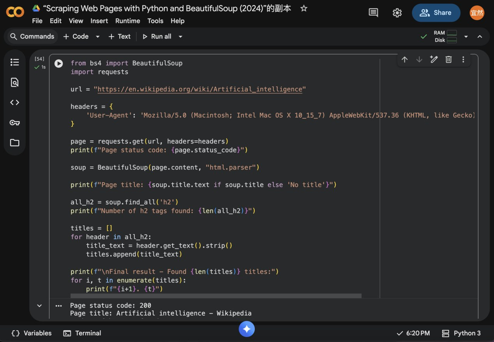
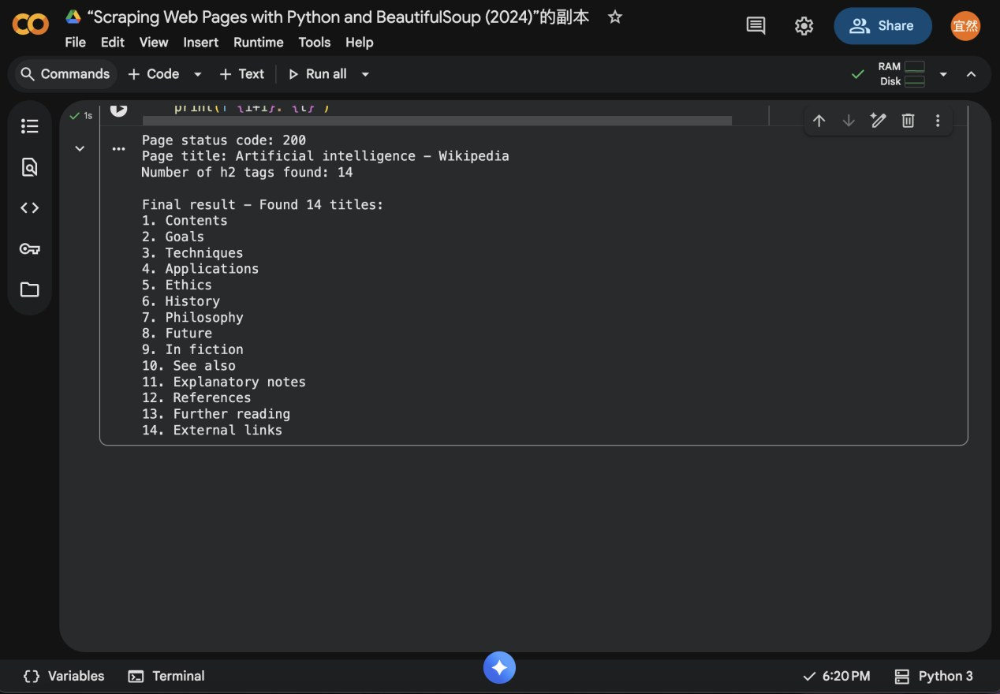

Scraping a Wikipedia article
My first web scraper, written in Python in Google Colab, collected the section structure of Wikipedia’s “Artificial intelligence” article. Getting it to run was the easy part. The harder lesson was that what a scraper returns has already been shaped by other people.

What I did
Working in a copy of the course’s scraping notebook, I wrote a script that requests the article, parses it with BeautifulSoup and collects every second-level heading.
The first run failed with a 403 error: the site refused the request. I added a User-Agent header so the request identified itself like a browser, and the page came back. The script found 14 headings, from Goals, Techniques and Applications to Ethics, History and Philosophy.

What I noticed
Landers et al. (2016) argue that scraping should be theory-driven: you need a “data source theory” of why a source can answer your question. Mine was that the article’s top-level headings would show how knowledge about AI is structured.
The 403 error made me check whether the source was even available on its own terms. The result made me question it further. The article is written by volunteer editors who do not represent everyone, and the structure the scraper reads was decided by the people who built the page. A scraper collects what has already been selected and organised, not raw facts.
Looking back
Scraping is a research method, not just a few lines of code. It needs a clear question, a judgement about whether the source is reliable, and rules to respect. Collecting the headings took seconds; doing that by hand across many pages would be slow and error-prone, which is where the method is worth using.